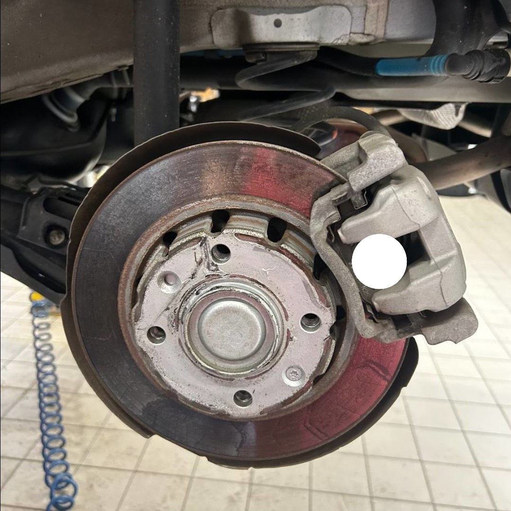

Home / Brakes
Why Do My Brakes Vibrate When Braking? Causes and Fixes
Quick answer
The most common cause is a brake disc (rotor) with uneven thickness, which makes the pads grab unevenly as it spins. Shaking in the steering wheel usually points to the front discs, a pulsing pedal or seat often to the rear. If the car also shakes when you aren't braking, look at wheels, tyres and suspension instead.

When brakes vibrate, I check the discs first, but I don't stop there. I've seen discs that looked fine at first glance while the real cause was a sticking caliper or rust between the disc and the hub. That's why I look over the whole brake assembly before replacing anything.
Why do brakes vibrate when braking?
People say "warped discs", but the usual problem is more subtle: the disc surface has slight thickness variation. Each time it turns, the pad squeezes a thicker spot, then a thinner one, and you feel it as a pulse. It develops from uneven pad material deposits, heat, rust spots from sitting, or a disc that doesn't sit flat on the hub.
A shake that is there even without braking is a different problem; see Steering Wheel Shakes at Highway Speed.
Where do you feel it?
- Steering wheel shakes: front discs or front suspension.
- Pedal pulses: either axle, often front.
- Seat or body shakes: more likely rear discs.
- Only at high speed: often wheel balance, but worn discs can show it too.
Common causes
Uneven disc thickness or runout
The top suspect. Measure thickness at several points with a micrometer. More than a few hundredths of a millimetre of variation can be felt.
Uneven lug nut torque
Tightening wheel nuts with an impact wrench at random can distort the disc. Always tighten in a star pattern to the torque in your manual.
Rust or dirt on the hub
If the hub face is rusty, the disc sits slightly off-flat. Clean it before fitting a disc.
A sticking caliper
If a caliper doesn't release, the pad drags, the disc overheats and wear becomes uneven. A burning smell or one hot wheel after driving are clues.
Worn suspension or bearings
Worn track rod ends, ball joints or wheel bearings can make braking vibration feel worse.
Pads transferring material unevenly
Holding the brake pedal down on very hot discs can leave a pad-shaped deposit on the surface.
What to check yourself
- Does it happen only when braking, or also at speed? Only braking points to the brakes.
- Look at the discs. Are there grooves, a lip or blue heat marks?
- Check wheel nuts are tight and look for obviously unevenly worn tyres.
- Feel each wheel after a drive. One much hotter than the others suggests a sticking caliper.
For the full procedure, read How to Change Brake Pads Yourself, and tighten wheels properly with How to Tighten Lug Nuts Properly. A harsh scraping sound points elsewhere: Grinding Noise When Braking.
How to fix it
If the discs are below minimum thickness or have uneven wear, replace the discs and pads together on that axle. Clean the hub faces, tighten wheel nuts in a star pattern to spec, and bed the new pads in. Skimming the discs sometimes works but only if enough thickness is left.
Safety note. A strong shake, a pedal that sinks, or pulling to one side should be checked by a professional before you keep driving.
FAQ
Is it safe to drive with vibrating brakes?
For a mild pulse, short trips to a workshop are usually fine, but get it looked at soon. Heavy shaking is a reason to stop.
Can I just replace the pads?
Not if the discs are uneven. New pads on a bad disc will soon vibrate again.
Why do my brakes vibrate only at high speed?
Often it's wheel balance rather than the brakes, but worn discs can show it too.
Do I need new discs if my brakes vibrate?
Often, if the discs have uneven thickness, grooves or are below minimum thickness. New pads alone won't cure it.
Can wheel nuts cause brake vibration?
Yes. Uneven tightening can distort the disc, so use a torque wrench and a star pattern.
This guide is general information based on personal experience, not professional advice. Check your own vehicle's manual for exact specs and read the disclaimer before starting any job.